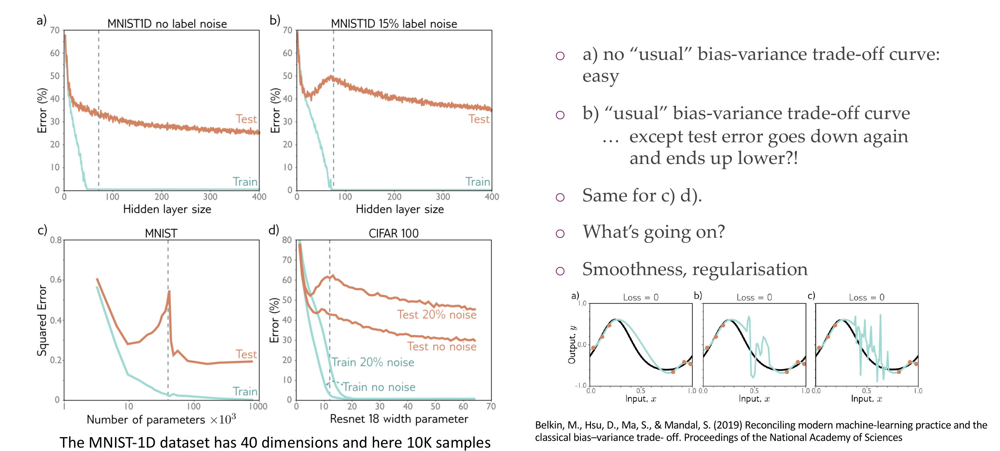
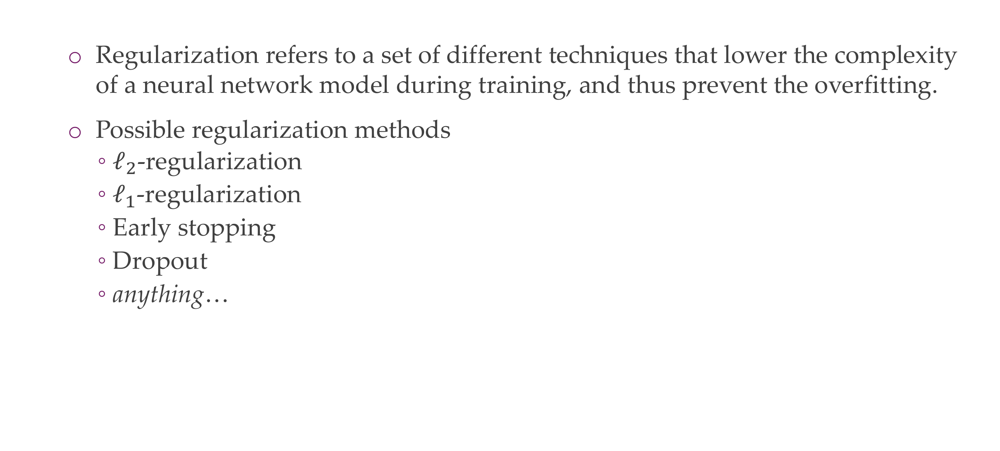
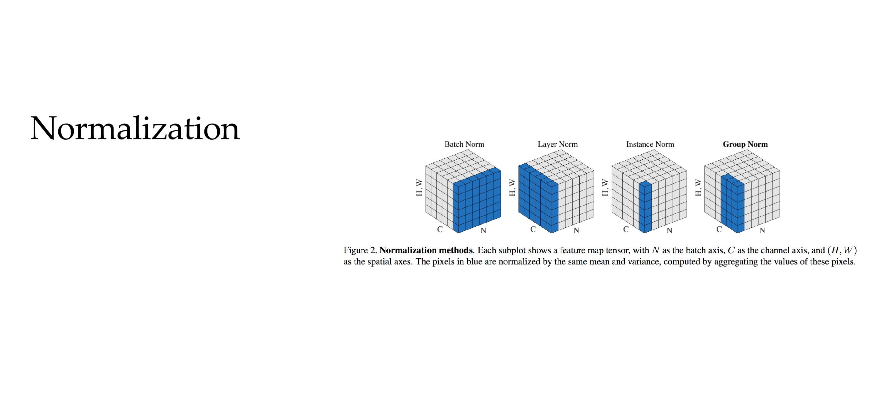

A good estimator is a function whose output is close to the true underlying thetha that generated the data
6 Bias-variance tradeoff
Slide 9
Bias
Estimator’s expected value= so the ouput of our thetha estimate and the true value of that parameter
Bias comes from not being able to model the real model in a correct way
Variance
So if you use a different training set or a different split how different are the learnt NNs parameters. If differ a lot then high variance
7 Bias-variance tradeoff
Slide 10
High variance & low bias, your model on average get it right but it has a high variance because it wants to model all noise, so overfilling, it spread all over the place
High bias and low variance, in average it does not even get it correct so underfitting
8 Overfitting
Slide 11
9 Overfitting
Slide 12
It will learn to recognize that the img contains hourses not by the hourses but the watermark. This is seen in the heat-map where the point of attention is in the watermark. This is overfitting
10 Overfitting
Slide 13
To avoid overfitting we use regularization
11 Overfitting: how “powerful” are neural networks?
Slide 14
12 This isn’t the full story..
Slide 15
13 Update 2019: Double Descent

Slide 16
Dash line is where the data samples equals the number of parameters
So in the top right image even if we have increase the number of hidden layers and our training error is zero then our test set is still decreasing that is weird.
So here we then presume that bigger model will have lower error.
Before we use to have a curve upwrads from the tipical bias/variance curve in the prev slide, but the weird thing is that where the dash line meets then this error starts to decrease again.
Two answers: smoothness and regularization
14 Double-descent: Smoothness from bigger models
Slide 17
In the x axis you have the number of times SGD was proceed, so the amount of units of texts akak ‘words’ were processed
We can see that with larger models I require fewer samples to reach a lower test loss
Also when they reach stability they can provide with a test loss which is the best shot they can give and this depends on their size, larger models give more accurate results
Also it shows that the quicker models learns quickler than the smaller model. So while the smaller model for a given number of tokens the large model learns more quickler.
This is Language models still not applicable for vision.
We also can say that (in language models) in terms of flops is more efficient to learn large models for fewer steps than to learn small models for larger amount of steps
15 Double-descent in practice?
Slide 18
In practice if you increase the number of neurons you may be closer to overfitting. For that we need regularization
16 Regularization

Slide 19
Here we reduce the complexity of a NN and avoid ovverfitting
17 1) L2-regularization
Slide 20
Referred to weight decay or Ritch regression in the linear case
Omega is proportional to how large the weights are
Minimizing this is also the same as if you assume a Gaussian prior on your weight, here you assume the weights are Gaussian distributed
18 1) L2-regularization
18.1 L2 & L1 Formula
L2 example Python
The L2 loss, also known as the Euclidean loss or Mean Squared Error (MSE), is a common loss function used in regression problems. It measures the average squared difference between the predicted values and the actual values.
\(y_i\) is the true (ground truth) value for the i-th data point.
\(\hat{y}_i\) is the predicted value for the i-th data point.
Here’s a simple example in Python using NumPy:
Code
import numpy as np# Generate some example datatrue_values = np.array([2, 4, 5, 4, 5])predicted_values = np.array([1.5, 3.5, 4.8, 4.2, 5.2])# Calculate L2 lossl2_loss = np.mean((true_values - predicted_values)**2)print("L2 Loss:", l2_loss)
L2 Loss: 0.12400000000000003
The L2 loss is calculated by taking the mean of the squared differences between the true and predicted values. The smaller the L2 loss, the better the model’s predictions align with the true values.
Slide 21
Lamda tells you how important the regularization is, if:
Lambda high then puts all the weights towards zero
Lambda is zero, then it learns the typical loss and do not care about regularization
Lambda during trainnig is fixed, if you want to find the best one you need to run lots of experiments
19 2) L1-regularization
Slide 22
Isotropics means is equal in all directions
Now if you take the gradient of this, now if you take derivative of w, because you want to optimize then it end ups a 1/2. So you end up with a constant factor in the loss that keeps getting substracted. So what happens is that we end up substracting a constant to our weights.
So it substract a bit from the positive weights and adds a bit to the negative weights and pushed them towards zero
20 2) L1-regularization
Slide 23
L1 leads to sparce weights, so that means more weights will be closer to zero
If alpha here increases then that means weights become zero
21 Why do L1 and L2 Regularizations work?
Slide 24
L2 regularization has basically a circular constraint area because you have w1^2 + w2^2 needs to be constant so all these combinations would be a circle
So the contours of the loss function in red will intercept the constrains regions at an axis. What that means is that if you are trying to find in this case the optimal loss, then it touches the constraint region where one of the values is set to zero while with L2 regularization there is no particular point where you could make one of the weights zero
This is because it needs to have the sum of the squares to be a small value but there is no particular motivation to have a similar weigth dimension to be equal to zero, so there is no reason to have sparse weights in L2
22 Effect: linear regression example
Slide 25
Here the alpha goes from strong to weak
In L1 it puches some weights to zero and then stay zero aftwer a while and it is not like all of them get smaller at the same time but some of them stay quite high for a loong time, and now increasing alpha here you are making individual weights close to zero.
L2 Regularization (Weight Decay): Encourages smaller weights but does not force them to be exactly zero. It smoothens the weights but doesn’t induce sparsity.
L1 Regularization: Promotes sparsity by adding a penalty term based on the absolute values of the weights. This can lead to some weights being exactly zero.
23 3) Early stopping
Slide 26
24 3) Early stopping
Slide 27
*Typo: with better test set error
The model at this stage have low variance because they are not overfitting
25 3) Early stopping
Slide 28
26 Why does early-stopping work as regularization?
Slide 29
27 Why does early-stopping work as regularization?
Slide 30
Here weight decay they mean by L2-regularization
Weight decay (L2-loss) vs Early Stopping
Weight decay, also known as L2 regularization, is a technique to prevent overfitting by adding a penalty term to the loss function that is proportional to the squared magnitudes of the weights. This regularization term discourages the model from learning very large weights and encourages a smoother and more generalized solution.
Early Stopping:
Early stopping is a regularization technique used during the training of a machine learning model, typically in the context of iterative optimization algorithms like gradient descent. The idea behind early stopping is to monitor the model’s performance on a validation set during training and stop the training process when the performance on the validation set starts to degrade, even if the performance on the training set continues to improve.
Mechanism: Monitor a performance metric (e.g., validation loss) on a separate validation set during training.
Decision Criteria: Stop training when the performance on the validation set starts to worsen or fails to improve for a certain number of consecutive epochs.
Purpose: Prevent overfitting by terminating training before the model starts to memorize noise in the training data.
Weight Decay (L2 Regularization):
Weight decay, also known as L2 regularization, is a technique to prevent overfitting by adding a penalty term to the loss function that is proportional to the squared magnitudes of the weights. This regularization term discourages the model from learning very large weights and encourages a smoother and more generalized solution.
Mechanism: Add a term to the loss function that penalizes large weights by adding the sum of squared weights multiplied by a regularization strength.
Decision Criteria: No specific stopping criterion; regularization is applied throughout the training process.
Purpose: Encourage the model to have smaller and more evenly distributed weights, preventing overfitting.
Key Differences:
Focus:
Early stopping focuses on monitoring the model’s performance during training and stopping when the validation performance indicates potential overfitting.
Weight decay focuses on adjusting the optimization objective by penalizing large weights, aiming to prevent overfitting from the beginning of training.
Decision Criteria:
Early stopping makes decisions based on the validation performance, and the training stops when the validation performance degrades.
Weight decay does not have a specific stopping criterion; it is a continuous regularization technique applied throughout training.
Implementation:
Early stopping involves monitoring and interrupting the training loop.
Weight decay involves adding a regularization term to the loss function during each iteration of the optimization algorithm.
In practice, these techniques can be used together to enhance the regularization effect and improve the generalization performance of a machine learning model.
28 4) Dropout: the problem it addresses
Slide 31
29 4) Dropout: why does it work?
Slide 32
30 4) Dropout: why does it work?
Slide 33
31 4) Dropout: how is it implemented?
Slide 34
You switch the activations to 0, and now say with Bernulli you have 50% neurons working
During testing you are not learning so you use all the neurons
Now with Dropout you cannot have neurons that are inactive, because you drop all other neurons so now they need to work
Decreases overfitting
32 Dropout
Slide 35
33 Dropout
Slide 36
34 Dropout
Slide 37
35 Dropout
Slide 38
36 Dropout
Slide 39
37 Dropout
Slide 40
38 Dropout US. Bagging
Slide 41
Bagging, also known as bootstrap aggregation, is the ensemble learning method that is commonly used to reduce variance within a noisy dataset. It is train in parallel
Bagging:
Has its corresponding training set that is different from the whole training set
Uses all neurons
Dropout:
It does not employ all neurons
They are not trained they only get one SGD because you have many infinitely subnetworks, so if you apply dropout it is very unlikely that you trian the same subentwork many times
39 Dropout beyond Bagging
Slide 42
40 5) Data augmentation
Slide 43
41 Data augmentation
Slide 44
42 One note about backtranslation though:
Slide 45
43 Common computer vision augmentations visualised
Slide 46
44 Data augmentation
Slide 47
45 Data augmentation
Slide 48
46 Other regularizations
Slide 49
47 Various ways to regularise
Slide 50
48 Normalization

Slide 51
Putting data into a common shape without distorting tis shape
49 Data preprocessing
Slide 52
Here basically if we have in same scale then our weights will not be elongated like in the elipse, now they would be able to take the same step size in the correct direction
50 Normalizing Input Data
Slide 53
This we apply in the input stage:
Normalization is a linear operator so you can put this back into the NN after you have trained if you want to
51 Normalizing intermediate layers
Slide 54
Here we talked about the normalization within the NN
52 Batch normalization
Slide 55
53 Batch normalization
Slide 56
How does batch normalization works?
Batch Normalization (BatchNorm) is a technique used in neural networks to improve the training stability and speed by normalizing the inputs of each layer. It was introduced by Sergey Ioffe and Christian Szegedy in their paper “Batch Normalization: Accelerating Deep Network Training by Reducing Internal Covariate Shift.”
Here’s a high-level overview of how Batch Normalization works:
53.1 Steps of Batch Normalization:
Normalization:
For each mini-batch during training, normalize the input by subtracting the mean and dividing by the standard deviation. The normalization is applied independently to each feature (dimension) in the input.
\(\hat{x}^{(k)}\) is the normalized output for the k-th feature.
\(x^{(k)}\) is the input for the k-th feature.
\(\mu\) is the mean of the mini-batch.
\(\sigma^2\) is the variance of the mini-batch.
\(\epsilon\) is a small constant added for numerical stability.
Scale and Shift:
Introduce learnable parameters (scale and shift) for each feature to allow the model to adapt during training.
\(y^{(k)} = \gamma \hat{x}^{(k)} + \beta\)
Where:
\(y^{(k)}\) is the final output for the k-th feature.
\(\gamma\) is a learnable scale parameter.
\(\beta\) is a learnable shift parameter.
Training and Inference:
During training, the mean and variance are computed for each mini-batch and used for normalization.
During inference, running averages of mean and variance from the training phase are typically used for normalization to ensure consistency.
53.2 Benefits of Batch Normalization:
Improved Training Stability:
Helps mitigate the internal covariate shift problem, leading to more stable and faster convergence during training.
Reduced Sensitivity to Initialization:
Reduces the sensitivity of the model to the choice of initial weights.
Allows Higher Learning Rates:
Enables the use of higher learning rates, which can accelerate training.
Acts as Regularization:
Introduces a slight regularization effect, reducing the need for other regularization techniques.
Applicability to Various Architectures:
Can be applied to various types of neural network architectures, including fully connected layers, convolutional layers, and recurrent layers.
Batch Normalization has become a standard component in many deep learning architectures due to its effectiveness in improving training stability and convergence speed.
54 Batch normalization — The algorithm
Slide 57
55 How does batch normalization help optimization?
Slide 58
Because some layers will push ouputs in one direction, then other layers will not use this. With batch norm we centered data so that all layers train around these centered inputs
56 How does batch normalization help optimization?
Slide 59
57 Benefits of Batch normalization
Slide 60
Train faster because all layers train similarly quickly
Allows you to have high learning rates because you wont have vanishing or exploding gradients because everything is 0-1 distributed
Makes weights easier to initialize, because you know everything will be between 0-1
Make activations function sensible because all the activation functions have something special about zero
Have added noise that comes from estimating the batch statistics, any noise that may help is regularization. Here the noise reduces overfitting and that acts as a regularization so that your model does not overfit.
Put it simple: Noise Disrupts Patterns
58 Quiz
Slide 61
There is no answer here
59 Batch normalization at test time
Slide 62
The important thing is that when you go to test time, you dont have batches (you dont want anything that is depended on how you construct the batch) because that means if you take another batch is not the same which then is not reproducible.
So what we usually do is keep a moving average of the mean and variance during training, and then at test time you plug them
Basically you extract the mean and the variance form the training and use it in test data
60 Disadvantages of batch normalization
Slide 63
It requires you to have large batch sizes because otherwhise the estimate of mean and variance is too noisy
Problematic if you have discrepancy of the training and tst data
Now the loss you get from training sample A, depends on what other training sample are present in the batch via this normalization of the mean and variance
One disadvantage is that is usually the reason for bugs, because if you keep estimating the mean and variances for the test data but now it is not reproducible because it will depend on the batch itself
61 Disadvantages of batch normalization with distributed training
Slide 64
Different values across GPU
If you batch size is small in a single GPU, but maybe you have 10 GPUs running and for 10 GPUs your batch size is bigger, it will be a stupid idea to estimate 10 very noisy estimate of the mean and variance but instead you should compute across the GPU
Here mean and variance are not computed across batch but across all channels and spatial dimensions.
So now the statistics are independent of the batch size because now they depend on the feature dimensions see example below:
Example Layer normalization
Layer Normalization is a normalization technique similar to Batch Normalization but operates on a per-sample basis rather than per-minibatch. It normalizes the inputs of a layer across the features (dimensions) for each individual sample. Here’s an example of how Layer Normalization is typically applied:
import torchimport torch.nn as nn# Assuming input has shape (batch_size, num_features)input_data = torch.randn(32, 64)# Layer Normalizationlayer_norm = nn.LayerNorm(normalized_shape=64)output = layer_norm(input_data)# Display input and output shapesprint("Input shape:", input_data.shape)print("Output shape:", output.shape)
input_data is a random tensor with shape (32, 64), representing a batch of 32 samples, each with 64 features.
nn.LayerNorm is the Layer Normalization layer provided by PyTorch. The normalized_shape parameter specifies the number of features in the input tensor.
The output tensor is the result of applying Layer Normalization to the input data.
Layer Normalization normalizes the values along the feature dimension independently for each sample. This means that each feature in a sample is normalized based on its mean and standard deviation across the entire sample, rather than across a batch as in Batch Normalization.
Layer Normalization is useful when the batch size is small or when working with sequences of varying lengths, as it normalizes each sample independently. It has been widely used in natural language processing tasks and recurrent neural networks.
Basically, we have that our mean and std will be computed across dimensions, so on the columns, not on each input. So then each sample (so each row) we make it with this mean and std to be distributed between 0 and 1.
This is great for RNN, or other stuff that requires small batch sizes.
Here the same operations happens at training and test time.
So now instead of normalizing across data samples now we basically i.e. if the input is an image that each color should be roughly be ocurring the same amount of spread across all the image, because now we normalize it across channel dimensions
63 Layer normalization (LN)
Slide 66
64 Instance normalization (IN)
Slide 67
Instance normalization now you do layer normalization but per channel and per training example.
So now the network should be agnostic to the constract of the original iamge and of the constrast whithin the channels
Not used that often
Here we compute the mean and var per sample but not per channel.
How Instance Normalization works
Instance Normalization is a normalization technique similar to Batch Normalization and Layer Normalization but operates on a per-instance basis. It normalizes the activations of each individual sample independently. Here’s an explanation of how Instance Normalization works:
64.1 Instance Normalization Steps:
Input Tensor:
Assume you have an input tensor \(X\) with shape \((N, C, H, W)\), where:
\(N\) is the batch size.
\(C\) is the number of channels.
\(H\) is the height of the feature map.
\(W\) is the width of the feature map.
Calculate Mean and Variance:
For each instance (sample) in the batch, calculate the mean \(\mu\) and variance \(\sigma^2\) along each channel independently. This is done for each channel and each instance separately.
\(\gamma_c\) is a learnable scale parameter for channel \(c\).
\(\beta_c\) is a learnable shift parameter for channel \(c\).
64.2 Benefits of Instance Normalization:
Normalization Across Samples:
Instance Normalization normalizes each instance independently, making it suitable for scenarios where batch sizes may vary or are small.
Reduces Covariate Shift:
Similar to Batch Normalization, Instance Normalization helps reduce internal covariate shift, leading to more stable training.
Applicability to Style Transfer:
Instance Normalization has found applications in style transfer tasks in computer vision.
Instance Normalization is often used in computer vision tasks, especially in scenarios where the batch size may be small or when normalization across instances is desired.
65 Group normalization (GN)
Slide 68
We are gonna group different certain channels toguether. So we are not normalizing per channel but per groups, for instance 5 channels.
If you have only one group then you recover layer nomalization because layer normal normalizes across all channels and not per channel
If you have more number of channel group toguether i.e 3 channels group together then you do Instance normalization. meaning you compute the mean per sample across each channel
In Grouped Convs, you are basically separating the hidden layers or the hidden channels in hidden groups which makes computations more easier
This is better than batch normalization for small batches <32
66 A comparison of different normalizations
Slide 69
67 Weight normalization
Slide 70
You can thing the weights like a vector, you can have its magnitude and its direction. Now with this g can learn this parameter which tells you how long you want to go in that direction
Slide 72
Slide 73
68 Learning rate
Slide 74
69 Convergence
Slide 75
To achieve convergence you need tehse two equations:
all learning over time should be infinitely to allow for exploration
The quadratic term should be less than infite to converge
70 Learning rate schedules
Slide 76
You also make a warmpup learning rate so you start by going up in a linear fashion
71 In practice
Slide 77
72 Quiz
Slide 78
We do all of the above,
It is good that if the loss explode you check the individual values of the gradients,
or was the batch size was so small that something could have affect it
or was the learning rate too high that even a small batch it was not too but but the large learning rate was too big tha then it end up in a completely broken spot in the NNs
73 Dropout rate
Slide 79
74 Batch size
Slide 80
75 Designing CNNs to become even better. (Don’t try this at home)
Slide 81
Architecture, which model do you use?
76 Number of layers and neurons
Slide 82
Progress is not only in the architecture side, for example if you want to develop better algorithms, you want to have just a neural network which can identify between cats and dogs, there is multiple ways:
Come up with a new architecture
Come up with better gradients and better weights of the NNs
77 Babysitting Deep Nets
Slide 83
for classifying 8 classes, the loss should be -log(1/8) and you check whether is true, if it gets worst performance that randomly guessing so something is wrong